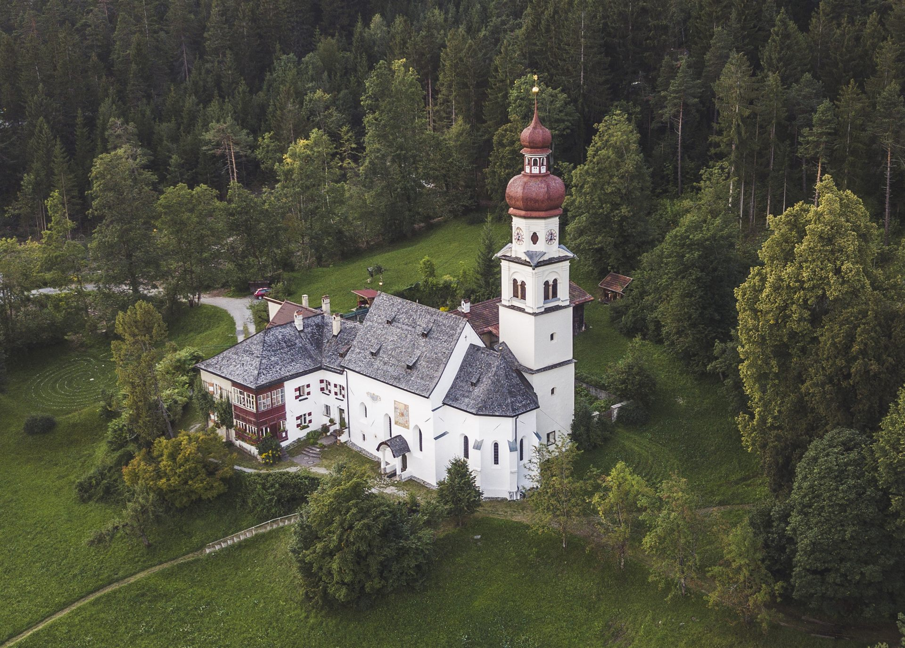
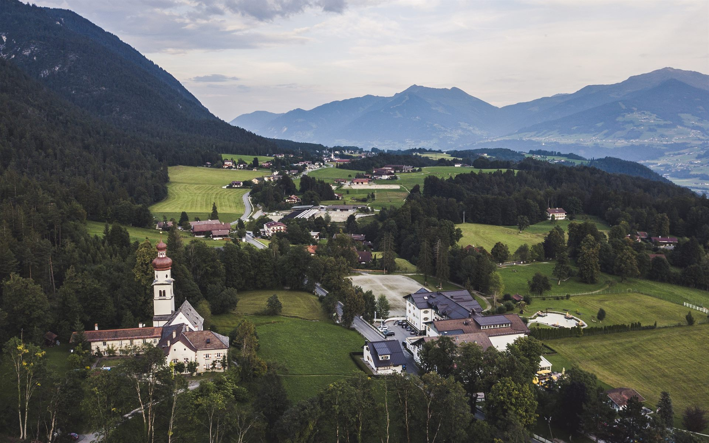
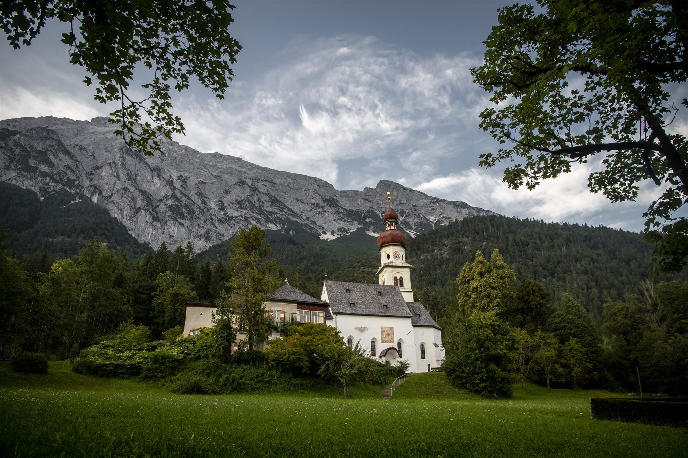
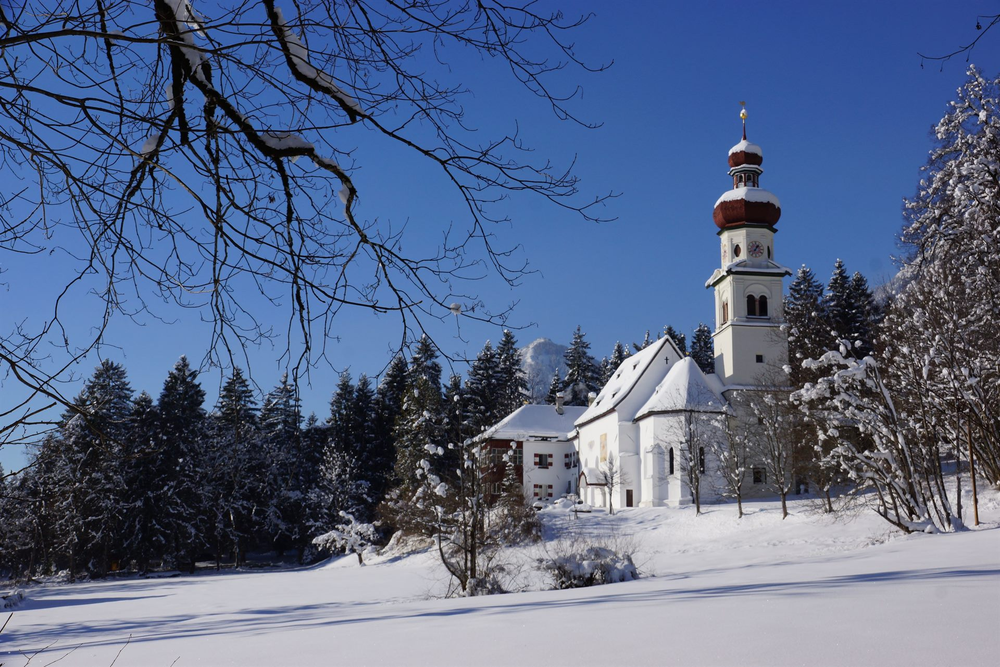

Ein Ort der Einkehr

 Pilgerstube
Pilgerstube
 Kapelle
Kapelle
 Pergola
Pergola

Klosteranlage
Kraftort
WinterDas Kloster St. Martin liegt am Eingang der Gemeinde Gnadenwald und blickt auf eine über 900-jährige Geschichte zurück. Bereits im 11. Jahrhundert stand hier eine Kapelle – ein Ort der Stille und Besinnung.
Die erste urkundliche Erwähnung stammt aus dem Jahr 1337. Waldbrüder gründeten eine Einsiedelei, 1499 entstand ein Frauenkloster unter Magdalena Götzner. Nach einem Brand 1520 und über 100 Jahren Verfall wurde das Kloster liebevoll wieder aufgebaut und ist bis heute ein lebendiger Ort des Glaubens und der Einkehr.
Heute öffnen wir als Pilgerherberge St. Martin unsere Türen erneut für Pilger, Wanderer und alle, die Ruhe und Kraft in der Natur suchen. In unserem gemütlichen Zwei- und Vierbettzimmer bieten wir einen einfachen, herzlichen Ort der Einkehr direkt am Tiroler Jakobsweg.